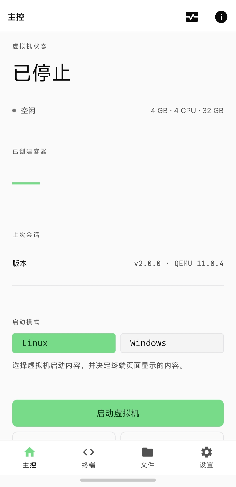
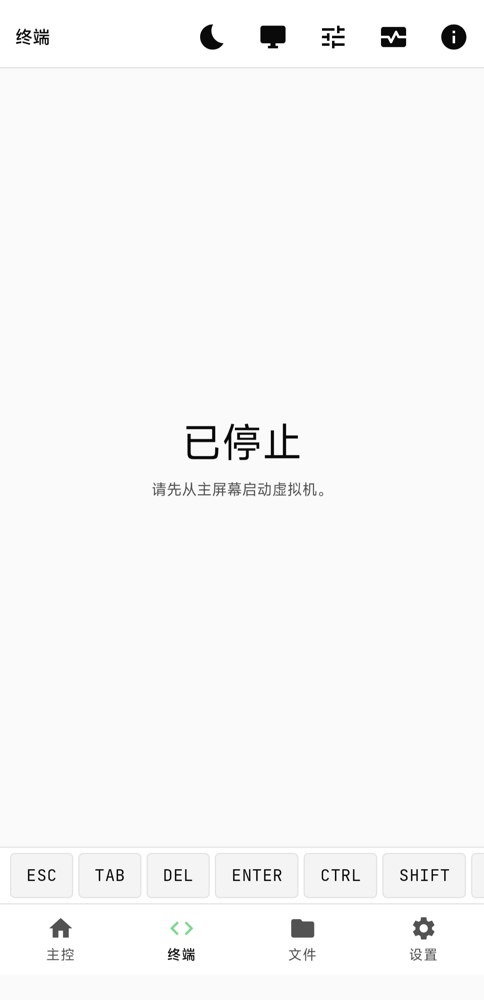
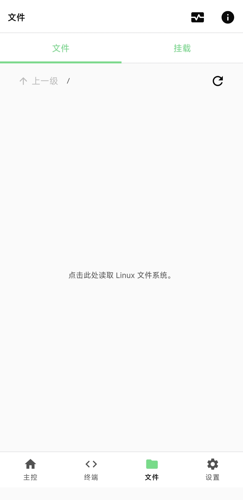
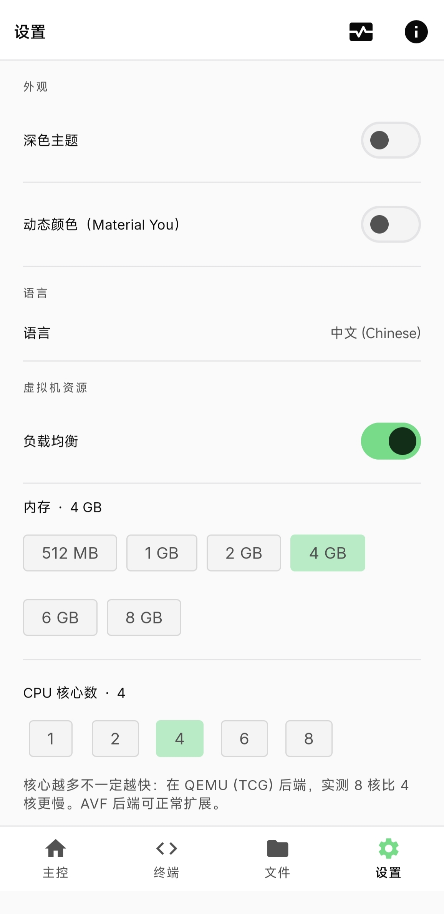

左右滑动查看更多截图




一台跑在手机里的完整虚拟机，不是 chroot、不是 proot。
Qodroid 基于
ExTV/Podroid
修改而来（GPL v2，包名 com.pxkf.qodroid）。它在 arm64 手机上运行带独立内核的
Alpine Linux，Podman / Docker / LXC 的行为与服务器一致；也可以加载自己的磁盘镜像，
启动 x86 Windows 虚拟机。内置终端、图形桌面查看器与容器管理，开箱即用。
为日常使用与折腾都留了空间
Alpine + 自编译内核，可安装 Podman / Docker / LXC，与服务器行为一致。
加载自有磁盘镜像，q35 + OVMF/UEFI 固件，内置 VNC 查看器看桌面。
普通设备用 QEMU（TCG）；支持 pKVM 的设备可选 AVF 硬件加速。
完整 xterm-256color，多主题字体，实时改窗口大小，快捷键齐全。
触摸、键盘、鼠标与音频；触摸板模式默认开启，窗口可拖动。
备份 / 恢复 podman 与 docker 的容器和镜像，自动检测可用引擎。
把手机 Download 目录挂进虚拟机，备份与文件交换不用来回拷贝。
从电脑 ssh 进虚拟机，或把 guest 端口暴露到局域网。
内置使用文档与常见问题，离线可读；许可证全文内置。
装好就能用，全部操作无需 root
加载镜像即可启动，桌面走内置 VNC
8.8.8.8 与 223.5.5.5